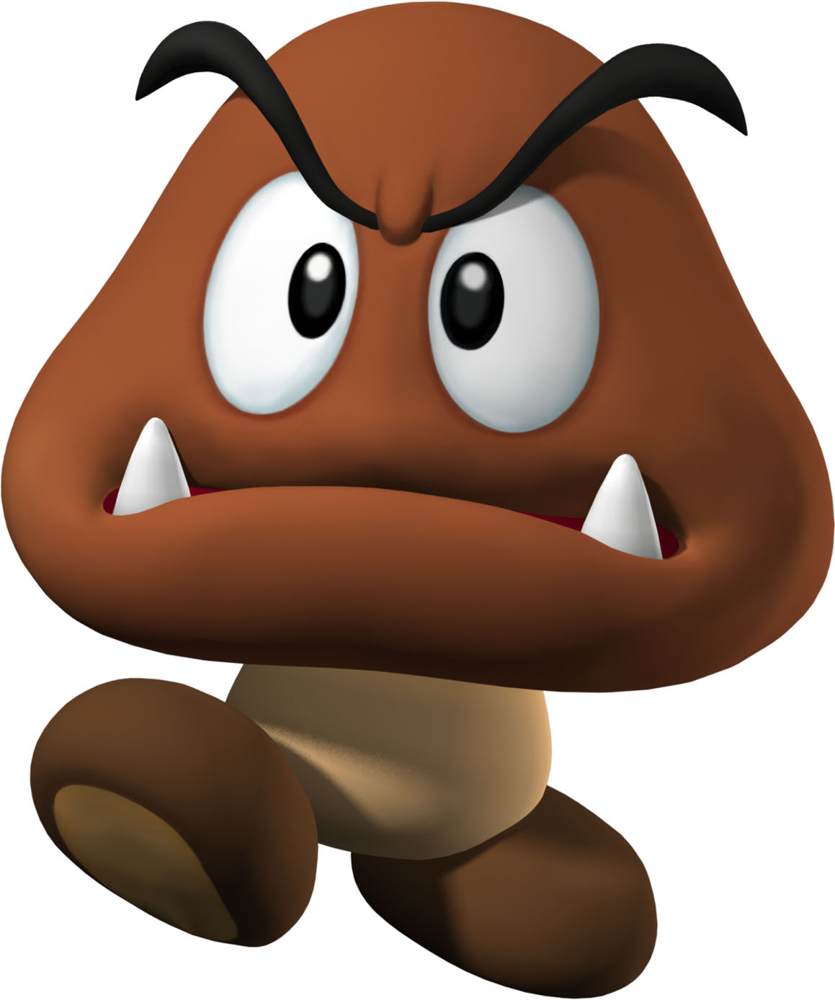
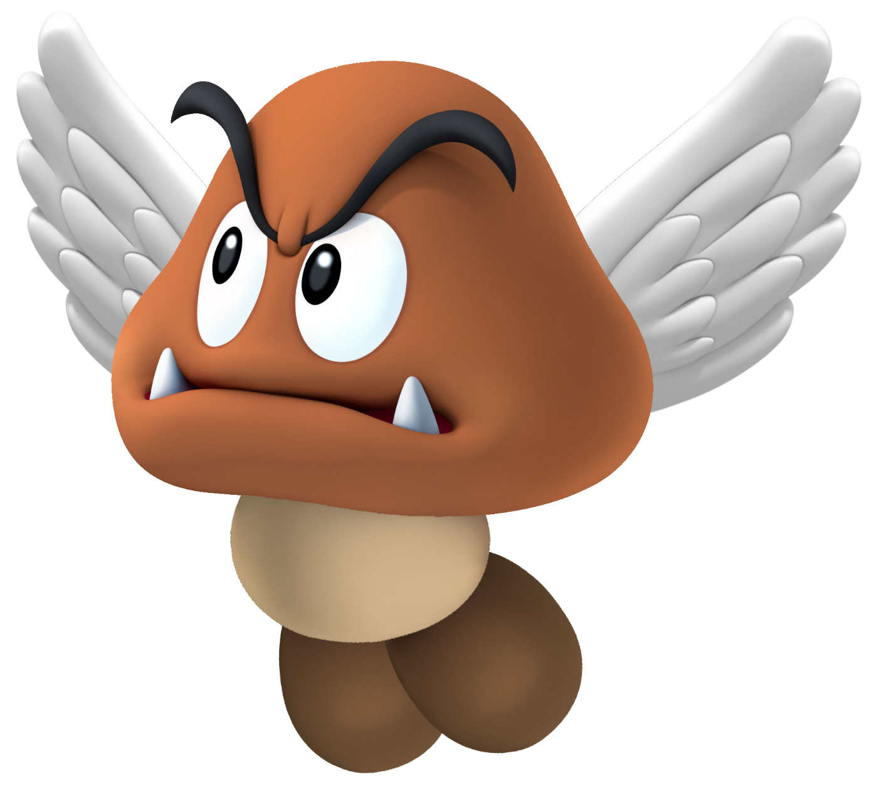
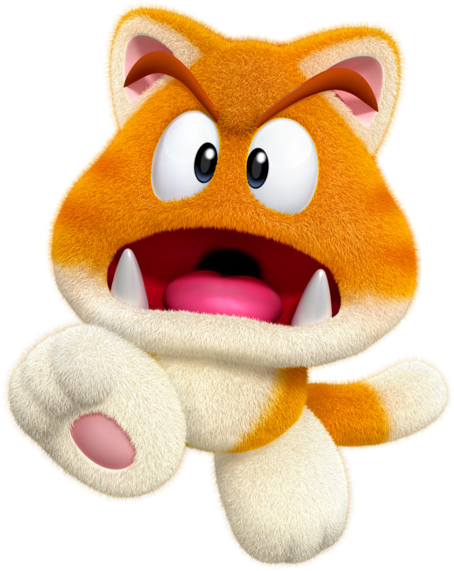
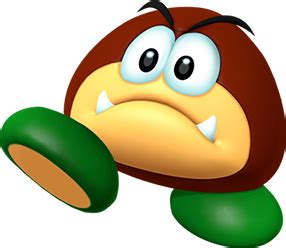
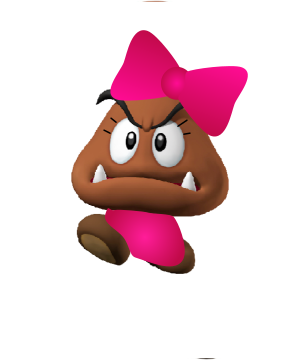
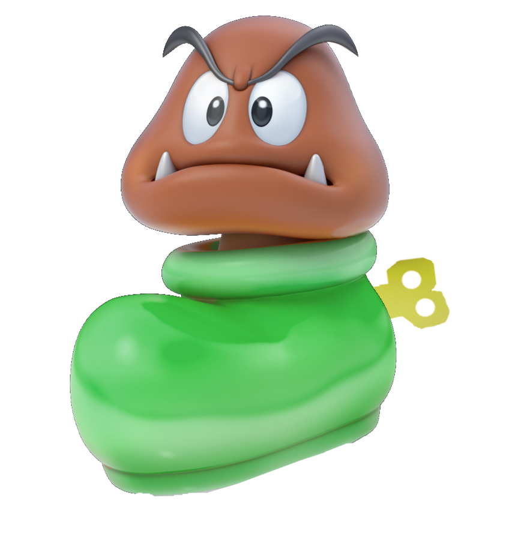

Goombas are Great!
Goombas may seem growly and scary at first, but they are really very sweet and harmless creatures, and make very loyal pets. There are many different varieties, but the one I most recommend for a pet is a catsuit goomba. The thing about keeping them as pets is, though, make sure you don't squish your goomba. There are many people who are scared of or hostile toward goombas, so make sure you don't let that sort into the house once you get your pet goomba! And then, there is also the problem of goombas being hostile toward or afraid of humans. It takes time to get goombas used to new people, but it is well worth it.
Types of Goombas
There are many types of goombas. Some of them are generally not as good pets as others, but every individual goomba is different. Here is a guide to some of the most common types of goombas:
Common Goomba
This is the most common type of goomba to see on trips in the Mushroom Kingdom and the surrounding lands. It is even rumored that some have been found on other planets. They are flightless mushrooms that walk on the two legs attatched to their stalks. They are said to be extremely grumpy all the time, but this is only because they have a natural fear of people squishing them. They are actually not usually grumpy. This variety makes good pets.
Paragoomba
This is another common variety of goomba. This type of goomba is technically an ordinairy goomba that somehow sprouted wings. They can be a lovely, fairylike sight when seen joyously bouncing around and flying on a fine day in the Mushroom Kingdom. They are happy and lighthearted creatures. They make great pets for people who are okay with owning a high-energy pet who literally bounces off the walls.
Cat Goomba
The cat goomba is a slightly less common goomba. They are more widey kept as pets than other goombas because of their fur. This is why there are not many cat goombas left in the wild. The largest known cat goomba colony is on Super Bell Hill. Legend has it that the first cat goombas came to be when a few goombas ate some Cat Bells. They are very cuddly and sweet pets. If you love cuddly pets and don't mind if they sharpen their claws on your couch, cat goombas are for you.
Galoomba
These are a highly peculiar species of goomba. They generally behave like ordinairy goombas. This type of goomba has a huge fear of any human. This is because of their curious ball shape that has caused them to be misused by some as soccer balls. However, if you get one used to you, they are amazing pets.

Have Fun with Your Goomba!
Once your goomba gets used to your family and friends, there are lots of perks. You can do lots of fun things with your goomba, including (but not limited to):
- Cuddling your goomba to bed
- Taking your goomba for walks in the park
- Teaching your goomba tricks
- Doing your goomba up for pet shows
Goomba Tricks
There are many tricks you can teach your goomba. Some of the most common are:
- Sit pretty
- Do a flip
- Play squished
- Sit Pretty
Tell your goomba to "sit pretty", then take a goomba treat and don't give it to your goomba until he or she sits pretty.
- Do a Flip
Get a treat and hold it in front of your goomba. Say "flip", then hold the treat high over your goomba's head. When your goomba jumps to get it, while your goomba is in midair, whirl the treat around your goomba and your goomba should whirl around to try to get it; hence, performing a flip. When your goomba reaches the ground, promptly feed him or her the treat, lest your goomba try to eat you instead. Repeat this multiple times, and your goomba should get the idea.
- Play Squished
Say "Play squished", and hold a treat below your goomba. Your goomba should squish down to get it. Repeat until your goomba gets it.
Goomba Shows
A very exciting thing about owning a pet goomba is, of course, bringing him or her to goomba shows. There is hardly anything more fun than seeing your beloved pet with a big blue ribbon, after all! There are many different goomba shows, all with different contests for your goomba to shine at. These include:
- Cute outfit contests
- Goomba trick contests
- Paragoomba flight contests
- Ice skating
- Shoe jumping
Here are the basic rules. Please note: rules may vary between diferent shows. Be sure to check out the rules for your local goomba show!
Cute Outfit Contests
This is a contest where you dress up your goomba in the cutest outfit you can. Some shows even request that you dress up with your goomba! That's pretty much all there is to it. Of course, you are not permitted to cheat (e.g. bringing in something that is not a goomba, squishing your goomba's competitors, or stealing goombas) but that is obvious.
Goomba Trick Contests
This is a contest where you show off all the cool tricks you taught your goomba. There are usually different catagories for different tricks, and one for tricks you came up with yourself. Often, though, the trick that the goomba performs in the most adorable manner is the one that wins, rather than the one that played squished in a most convincing manner. You are permitted to dress up your goomba unless the rules say otherwise.
Paragoomba Flight Contests
This is a contest to see whose paragoomba can fly the highest. Extra points are usually awarded for how prettily your goomba flies, but taken away if your goomba crash lands.
Ice skating
In this contest, your goomba competes against other goombas to see who can ice skate the best. Your goomba needs an ice skate to hop into, and it is best if you practice beforehand. Each goomba has a set time to perform on the ice, the period of time depending on the show. Performance can include twirls, leaps, having your goomba leave skate marks in the form of a message or picture, or all of these and more. You are permitted to dress up your goomba.

Shoe Jumping
To compete in shoe jumping, you need to get your goomba into a shoe (thus creating a shoemba), and have him or her jump around as high as he or she can.
